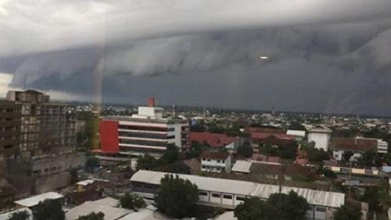

Ahmad Ibo | 01 Jan 2019, 12:01 WIB

Foto: @Makassar_iinfo
Awan berbentuk gelombang tsunami muncul di langit Kota Makassar bertepatan dengan hari pertama tahun 2019. Foto-foto awan tsunami tersebut pertama kali diunggah akun media sosial Instagram @makassar_iinfo. Menurut informasi di dalam unggahan tersebut, foto diambil di Bandar Sultan Hasanuddin Makassar, Sulawesi Sekalan. Sontak foto dan video tersebut langsung mengundang komentar warganet.
Menanggapi fenomena awan tsunami tersebut, Rahmat, Forecaster on Duty Stasiun Meteorologi Raden Inten saat dihubungi Liputan6.com, Selasa (1/1/2019) mengatakan, bentuk awan tersebut sangat lazim terjadi. "Itu awan kombinasi dari berbagai awan, awan cumulonimbus, awan rendah stratus, dan awan menengah dan tinggi," ungkap Rahmat.
Namun demikian, Rahmat menjelaskan, awan ini membawa potensi hujan lebat yang disertai angin kencang.
Bentuk awan yang menyerupai gelombang tsunami ini juga pernah terjadi di beberapa negara, salah satunya di Sydney, Australia pada 2015. Awan tsunami tersebut diabadikan fotografer Reuters di Pantai Bondi. Meski bentuknya menyeramkan, namun awan ini dianggap tidak berbahaya lantaran hanya fenomena yang terjadi karena udara lembab bercampur dengan angin yang dingin.
"Kami sendiri belum menemukan literatur tentang awan berkaitan dengan gempa," ungkap Rahmat menambahkan.